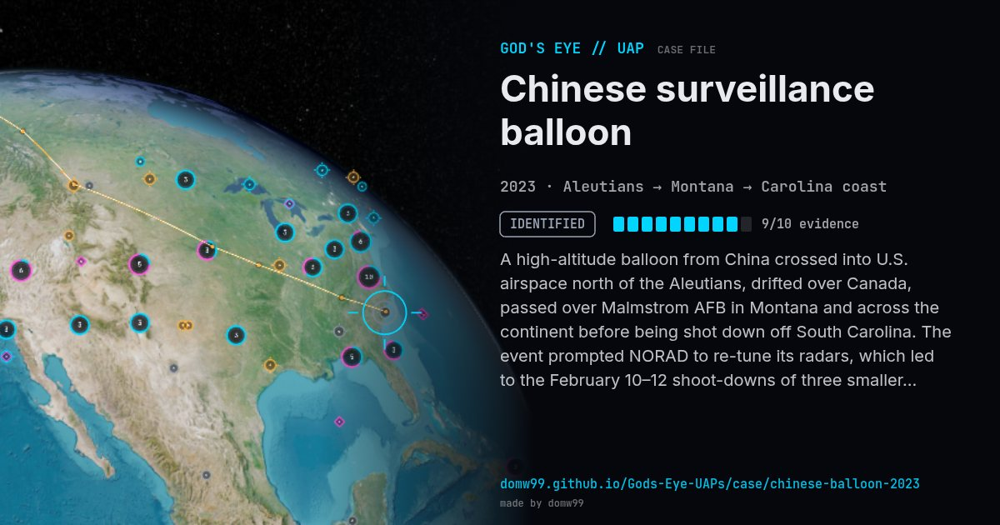

Chinese surveillance balloon
IDENTIFIED

A high-altitude balloon from China crossed into U.S. airspace north of the Aleutians, drifted over Canada, passed over Malmstrom AFB in Montana and across the continent before being shot down off South Carolina. The event prompted NORAD to re-tune its radars, which led to the February 10–12 shoot-downs of three smaller unidentified objects.
Explanation
A PRC high-altitude surveillance balloon; shot down by an F-22 AIM-9X off Surfside Beach, South Carolina, and recovered by the U.S. Navy.
What was seen
Shape: Large white balloon with solar-array payload
Witnesses: Millions; NORAD tracking
Duration: 8 days
Browse
- United States
- 2020s
- Identified
- Tracked object events
- Official government documents
- Photographs
- Radar tracking
- Physical traces
- Video footage